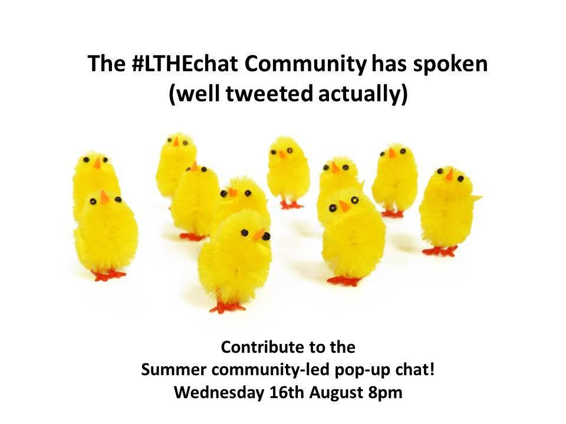
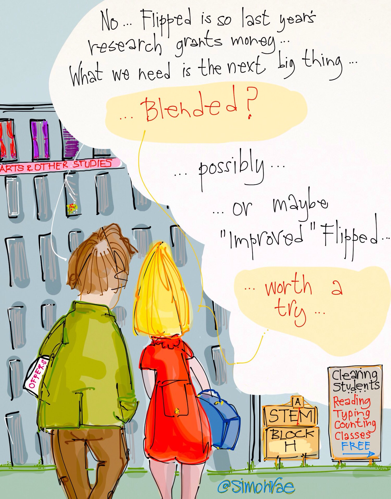
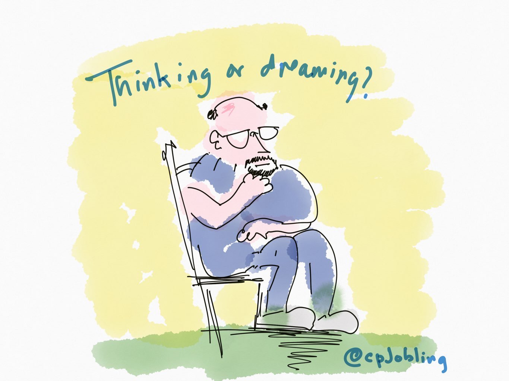
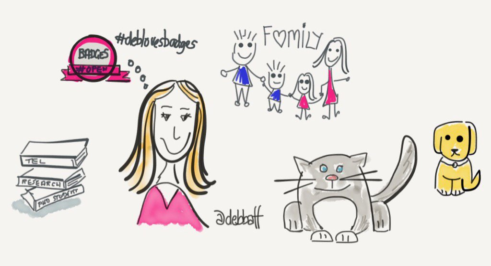
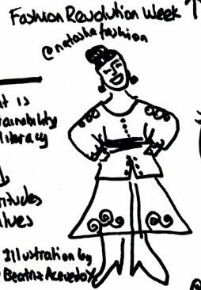
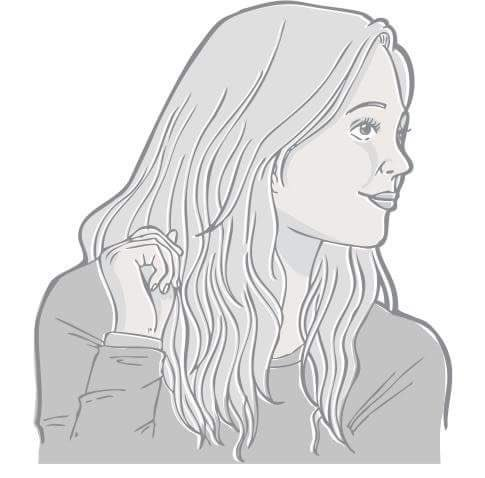
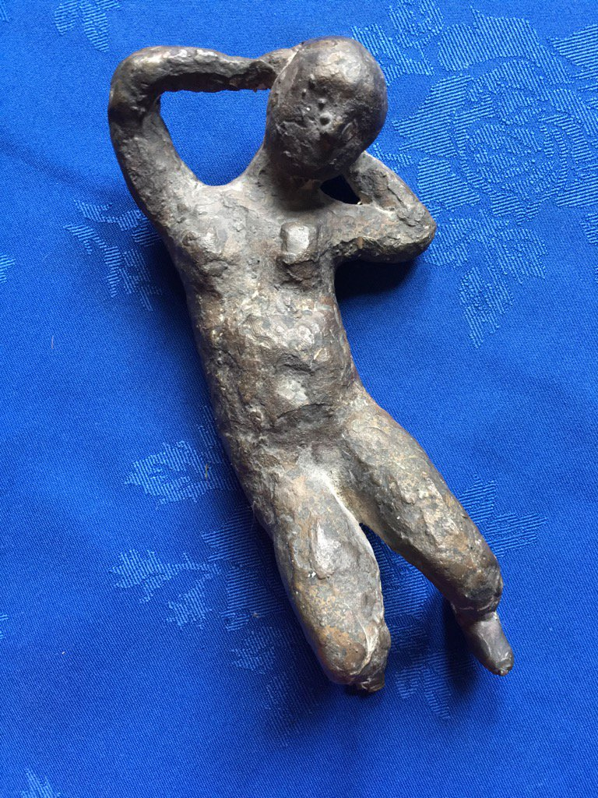
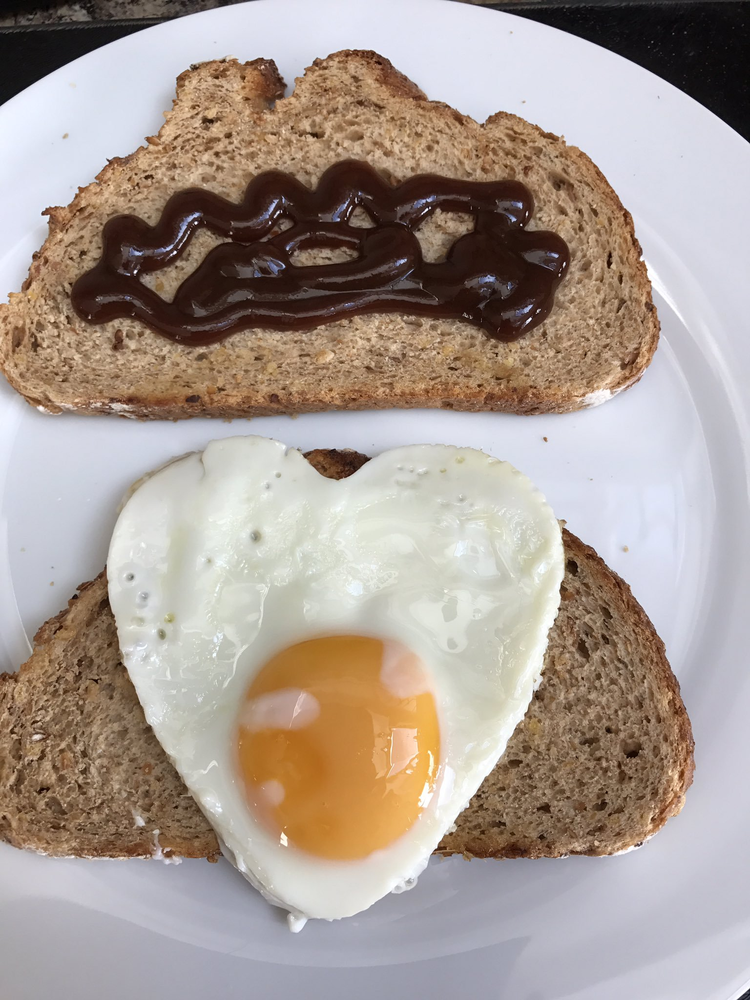
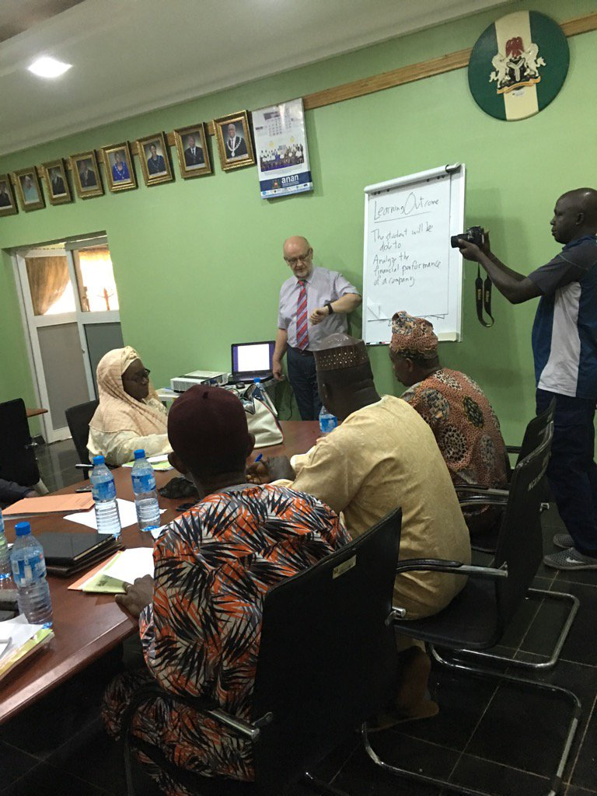

- Date for your diary: Summer Community-Led Pop-up Chat 16th August 8pm #LTHEchat http://lthechat.com/2017/07/24/date-for-your-diary-summer-community-led-pop-up-chat-16th-august-8pm-lthechat/ … pic.twitter.com/3NE1laJNse
- Check out this blog post to find out how you can contribute to and join in the community-led pop-up #LTHEchat! https://twitter.com/LTHEchat/status/892307846536343558 …
- Nice, a pop up chat for a summer #lthechat - community led or a chance for a bit of global anarchy... https://twitter.com/LTHEchat/status/892307846536343558 …
- Help is at hand @RacePhil! Join the community-led pop-up #LTHEchat 16th August 8pm. More info here: https://lthechat.com/2017/07/24/date-for-your-diary-summer-community-led-pop-up-chat-16th-august-8pm-lthechat/ … https://twitter.com/RacePhil/status/877619702520000512 …
- Update from Sally and I on our summer plans, including #lthechat on 16th August, @ProfSallyBrown Summer Projects https://sally-brown.net/2017/08/02/summer-projects/ …
- Glad to see @LTHEchat is back for pop-up chat! #LTHEchat #community #engagement #Discussion @begumru...FYI https://twitter.com/LTHEchat/status/892307846536343558 …
- The latest Random Stuff! http://paper.li/scottturneruon/1400940318?edition_id=f745f8e0-791d-11e7-b326-0cc47a0d15fd … Thanks to @LMcUnderwood #lthechat
- Still time to contribute and vote on a topic for the Summer community-led pop-up #LTHEchat! https://lthechat.com/2017/07/24/date-for-your-diary-summer-community-led-pop-up-chat-16th-august-8pm-lthechat/ …
- Shout out for #LTHEchat which sounds interesting - must mention #uklibchat for library related discussion! #UofMLibraryTalks @EricStoller
- The community-led pop-up #LTHEchat topic is on the flipped classroom. Time now to start composing your questions. https://docs.google.com/document/d/1pJhMyBBl4cl_P6THkncthJ6s6wEjcT4uvajLq1xBuCA/edit?usp=sharing … pic.twitter.com/Afgyuu6wum
- Time to add your questions in preparation for the community-led pop-up #LTHEchat 16th Aug Full details in this post https://lthechat.com/2017/07/24/date-for-your-diary-summer-community-led-pop-up-chat-16th-august-8pm-lthechat/ … https://twitter.com/LTHEchat/status/895245871855665153 …
- @LTHEchat I have added my questions and voted - have you? #LTHEchat on #flippedclassroom https://twitter.com/LTHEchat/status/895245871855665153 …
- Some great questions coming together for next week's pop-up #LTHEchat. Do take a look and vote on the best or add your own. https://twitter.com/ElizabethECharl/status/895614069176127490 …
- Thanks for all the RTs about next weeks pop-up #LTHEchat Full details in the blog post https://lthechat.com/
- Questions being gathered for next week's pop-up #LTHEChat. See blogpost for details of how to contribute and vote: https://lthechat.com/2017/07/24/date-for-your-diary-summer-community-led-pop-up-chat-16th-august-8pm-lthechat/ …
- We now have 12 questions for this Wednesday's pop-up #LTHEchat! Time to vote up the best ones https://docs.google.com/document/d/1pJhMyBBl4cl_P6THkncthJ6s6wEjcT4uvajLq1xBuCA/edit?usp=sharing …
- I have voted ... have you? #LTHEChat https://twitter.com/lthechat/status/896294920431992832 …
- @JaneKerslake Will be good to discuss this in Wednesday's #LTHEChat
- community-led Summer pop-up #LTHEchat Wed ⏰ … the ‘flipped classroom’ teaching style #blended delivery improved #flippedclassroom @LTHEchat pic.twitter.com/Y02sRxifJz
- Wednesdays summer community #lthechat looks relevant for teaching enhancement @TEL_Hull @LTHEchat https://lthechat.com/ See you there? https://twitter.com/simonrae/status/896748206217973760 …
- UPDATE: Summer Community-Led Pop-up #LTHEchat 16th August 8pm The chosen topic and questions have now been added! https://lthechat.com/2017/07/24/date-for-your-diary-summer-community-led-pop-up-chat-16th-august-8pm-lthechat/ …
- Be great if an expert like @RobertTalbert (who's just written a book on flipped learning) could join this week's #lthechat https://twitter.com/lthechat/status/897387519238688768 …
- @RobertTalbert Great! #lthechat is 8:00 to 9:00 pm BST tomorrow. So I guess mid afternoon where you are. Questions here: https://lthechat.com/2017/07/24/date-for-your-diary-summer-community-led-pop-up-chat-16th-august-8pm-lthechat/ …
- Good morning! Don't forget today at 8pm BST is the community-led Summer pop-up #LTHEchat. All welcome. https://lthechat.com https://twitter.com/warnetony/status/897700121164607489 …
- You may be interested in #LTHEchat tonight - it's a community pop-up at 8pm https://lthechat.com/2017/07/24/date-for-your-diary-summer-community-led-pop-up-chat-16th-august-8pm-lthechat/ …
- #LTHEchat is happening tonight - it'll be about flipping, and it's a community pop-up https://lthechat.com/2017/07/24/date-for-your-diary-summer-community-led-pop-up-chat-16th-august-8pm-lthechat/ … it'll be great fun :D
- Date for your diary: Summer Community-Led Pop-up Chat 16th August 8pm #LTHEchat https://lthechat.com/2017/07/24/date-for-your-diary-summer-community-led-pop-up-chat-16th-august-8pm-lthechat/ … via @LTHEchat #FlippedClassroom
- I totally missed the whole planning phase of this, but looking forward to participating in the pop-up #LTHEchat tonight! #FlippedClassroom
- Just over an hour to go! #LTHEchat Be as creative as you like when you introduce yourself at 8pm! Get the kids/grandkids to draw you ;-) https://twitter.com/LTHEchat/status/897387519238688768 …
- @ProfSallyBrown Shared a very similar day! Feeling the gardening as lots of digging. #LTHEchat
- #LTHEchat I'm Phil Race. A participant in Perth, Australia did this sketch of me in action a decade ago, as feedback. pic.twitter.com/67wvV80oqA
- 
- #LTHEchat I am Rebecca. In lovely Todmorden, tweeting with my cats. Excited to learn and share tonight. pic.twitter.com/GeRujqTuFT
- Greetings #LTHEchat I'm Robert Talbert from Grand Valley State University in Michigan, USA. Here's a view from nearby: pic.twitter.com/kARiL3USv2
- Tonight’s topic is a discussion on the ‘flipped classroom’ approach #LTHEchat pic.twitter.com/7a39YXAWFE
- @RobertTalbert Great to see you here Robert! Hope you enjoy #LTHEchat
- #LTHEchat hello from a rather soggy south Wales ... I'm Debbie :) pic.twitter.com/Wqs1zFrWKE
- Hi there joining from the beach ;) #LTHEchat love making stuff & connecting ideas & people pic.twitter.com/fDohcJCEGF
- @LTHEchat Natascha NTF @#LCFLondon #LTHEchat research #creativity #international #Sustainability #marketing portrait by @beatrizacevedoX pic.twitter.com/HWsokr91PM
- “@chrissinerantzi: Hi there joining from the beach ;) #LTHEchat love making stuff & connecting ideas & people pic.twitter.com/yWcykgJ1EC” Hi!
- I'm Dave webster. My goddaughter did this catalogue-model-style photoshoot of me last week. #LTHEchat pic.twitter.com/mE9bMEU2kq
- Hi from Milton Keynes! (I should be working) #LTHEchat pic.twitter.com/p4TsOVdQ0s
- Evening all, long time "no see" Fresh (real fresh) graduate from @UniWestminster & keep 👀out on where I end up in Sept #LTHEchat @LTHEchat pic.twitter.com/xhsWPDHgwe
- Helloooo! I'm joining #LTHEchat from Middlesbrough. Currently in my kitchen with my dog, Harvey, and a glass of red wine! Photo from Feb 17 pic.twitter.com/TnkDlyzZj8
- Hiya! Jennie Blake, in learning development @OfficialUoM. Was lucky enough to get this drawn as a header for some book reviews #LTHEchat pic.twitter.com/FrtYbgZk5D
- A1 #FlippedLearning students access info/content away from class. bring questions solutions insights to share & discuss in class #LTHEchat
- #LTHEchat I made this (of me) on a Fine Art Foundation Cse aiming to prove school wrong she told I was rubbish at art pic.twitter.com/V5OANwneOB
- A1: I wrote a blog post on this recently http://rtalbert.org/how-to-define-flipped-learning/ … but here is the gist... #LTHEchat pic.twitter.com/68hSrCC46d
- @ProfSallyBrown Hi dear Sally ;) hope you are well and Phil too. #LTHEchat
- I'm a senior lecturer from Sheffield. I love the sun ☀️ and my garden. Oh also love ❤️ fried egg sarnis! #LTHEchat pic.twitter.com/I26tZ9Zds0
- Hi I'm Ruth from Bradford and spent many years making music in a brass band ... I started young :-) #LTHEchat pic.twitter.com/E16x3ISBZH
- “@liz_isabella: Hi from Milton Keynes! (I should be working) #LTHEchat pic.twitter.com/ErSlTfaQEb” You are!
- A1: "Flipped Classroom" - So students taking the lead and facilitating the "absorption" of knowledge from self/ peers/ academics #LTHEchat https://twitter.com/LTHEchat/status/897896825109270529 …
- A1 That's adapted from the fine folks at http://flippedlearning.org https://flippedlearning.org/definition-of-flipped-learning/ … #LTHEchat
- @RobertTalbert I like that definition - thank you! #LTHEchat
- Hi, I'm Auntie Keely, I have spent my day off with my nephew ❤️#LTHEchat pic.twitter.com/5vdzJXdjzO
- #LTHEchat Teacher. Consultant. Here teaching Accountancy academics in Nigeria last week. Also, traveller! pic.twitter.com/QpZ6d9nDqG
- #LTHEchat A1 flipped classroom part of active learning approach https://twitter.com/cpjobling/status/897897675131154432 …
- A1: It would help though @WarwickLanguage, except need students to do the prep beforehand for a more deep classroom discussion? #LTHEchat https://twitter.com/WarwickLanguage/status/897897940928393216 …
- A1 hello all on a lovely evening from Yorkshire. I am Andrew and pleased to be here again for #LTHEchat pic.twitter.com/meaGFNDKYv
- @profpeterbrad ... nothing but perhaps we'll get to that! #lthechat
- #LTHEchat im Joel currently living in Yorkshire working @UniOfHull and I'm a Minecraft mentor amongst other things. pic.twitter.com/jVbHFlXVuJ
- A1: If only every session could consist of play and demos...that would be very interactive! *If only* #LTHEchat @RobertTalbert @LTHEchat https://twitter.com/RobertTalbert/status/897898543435960320 …
- And not just in terms of the medium...text/video etc. I'm a bit confused! #LTHEChat https://twitter.com/profpeterbrad/status/897898642345951232 …
- @profpeterbrad There's more embedding of technology and making things more interactive. Also, there's more focus on a *reason* to do it 1/2 #LTHEchat
- @profpeterbrad #LTHEchat What changes is structure, focus on student learning pre-class (not just completing readings), and boosting self-regulation skills
- @profpeterbrad 2/2 for example you watch a video to complete a specific group activity in the class for which you need things in the video #LTHEchat
- A2: really tough question as I've not been successful! But I've just bought @RobertTalbert's book so I have hopes! #lthechat
- @profpeterbrad I seriously doubt that you have 'no skill in visual art whatever'! #LTHEchat
- A1: Having ideas are easy...but implementing them can be hard. Is all about getting everyone engaged & involved.. #LTHEchat @WarwickLanguage https://twitter.com/WarwickLanguage/status/897898814144741380 …
- @RobertTalbert @LTHEchat Definitely, and those are the most memorable experiences during university. Teachers are more than just teaching #LTHEchat #LifeLessons
- @DaunceyEmil I'd argue 'flipped' means removing portion whre students "sit & listen"- do that in advance in flipped model- in class thy active #LTHEchat
- This is why I think we need to emphasise the video/screencast element and not try make Flipped Learning more complicated #lthechat https://twitter.com/profpeterbrad/status/897898642345951232 …
- @profpeterbrad @profpeter #lthechat Maybe what different is, if they haven't done the reading, the flipping class doesn't work.
- @David_Baume Absolutely. Subbing in student work/contributions for my "talk" been really powerful. Also makes me carefully choose what to say. #LTHEChat
- @SarahNeyLTI I suspect the term may fall from favour: also wanted to imply that the concept isn't as new as it looks #LTHEchat
- @cpjobling A2 #lthechat Do tell - mistakes are great for learning :D
- @chrissinerantzi Hope you are having a fab holiday! #LTHEchat
- Hi. I'm Natalie (and am new to #LTHEchat so am playing catchup with responding - sorry) - I love owls! pic.twitter.com/Tj4Xl1t83x
- @NatalieMRowley Welcome Natalie. #LTHEchat
- A2 Second favorite is peer instruction especially when lots of conceptual knowledge is happening. https://en.wikipedia.org/wiki/Peer_instruction … #LTHEchat
- Ah ok...I'm starting to get it! #LTHEchat https://twitter.com/davidwebster/status/897900308348755968 …
- A1 I quite liked the definition offered here. 'A class that uses screencasts as an instructional tool'. http://flippedlearning.org/syndicated/perks-flipped-primary-classroom/ … #lthechat https://twitter.com/profpeterbrad/status/897898642345951232 …
- @RosieHare Careful with that though. Some flipped learning use no screencasts; some classes use video but are not flipped learning. #LTHEchat
- Was it challenging to get people on board? Why were they/were they not convinced? #LTHEChat https://twitter.com/chasing_ling/status/897900272227205120 …
- @chasing_ling @RissaChem @LTHEchat &maybe involving them in how it should work? Might help w/ buy-in&add peer pressure to complete pre-work if "we" decide to do it. #LTHEChat
- @chrissinerantzi @WarwickLanguage Monitoring and evaluating session can be an effective way? #LTHEchat
- A2 - I found flipping gave us the time to do all of these exciting and powerful things. Flipping can bring time for peer teaching. #lthechat https://twitter.com/RobertTalbert/status/897900450502017025 …
- Like this problem based learning approach #LTHEchat https://twitter.com/RobertTalbert/status/897899508805365760 …
- @MartinRich106 @SarahNeyLTI share your dislike of buzz words and agree that this is not new methodology, more a way to encourage re-examining what we do #lthechat
- @RobertTalbert I know what you mean, but in terms of my job I think that's an easy way to describe what flipped learning is to academics. #LTHEchat
- @DaunceyEmil Interestingly, for the 3rd years, some saw watching the videos as *extra* work even though it was less than lots would usually do #LTHEchat
- A2: I remember from my UG that flipped classroom=students need to come prepare. Otherwise, it will be a very looong quiet session #LTHEchat https://twitter.com/LTHEchat/status/897898819802812416 …
- @David_Baume A lot of my students are computing majors, so debugging is a natural state of mind for them. Builds good skills. #LTHEchat
- @chasing_ling @RissaChem @LTHEchat Me too... in fact, I'm going to try to be more explicit about the "why" of various things in modules this semester #LTHEchat
- @RobertTalbert They can be variations in that and people can add/change bits. But, otherwise, aren't we just talking about learning if too broad? #lthechat
- @NatalieMRowley welcome Natalie! Love the owl. #LTHEchat
- Lots of interviewees, PhD stdts, at http://philosvids.wordpress.com happy to do brief Skype q&a sessions w/ class. Undergrads love it. A2 #LTHEchat https://twitter.com/davidwebster/status/897900308348755968 …
- @RobertTalbert @suebecks Robert … (Flipped Learning Expert) … meet Sue (PBL Expert). #matchmaking #LTHEchat
- @chasing_ling @DaunceyEmil Huh. Because it ran counter to expectations? Although I am also one that prefers to read over watch a video.#LTHEChat
- @RosieHare Not necessarily. There are some necessary components: Structure, focus on all students, focus on self-regulation. #LTHEchat
- 100% #LTHEchat my first sessions this year will be about approaches, methods, ethos and reasons https://twitter.com/JennyLewinJones/status/897901297592086529 …
- Like that idea. The video just show some of the steps. The next iteration is to pose a planning stage. #LTHEchat https://twitter.com/anortcliffe/status/897900957786419200 …
- @profpeterbrad On the whole, were they the ones that failed the course, or so good they didn't need to bother? #LTHEchat
- A3: plenty … I’m sure that @RobertTalbert could give us the key references (and there’s his book of course) #LTHEchat
- A3 A3 Check out some of the data I dug up on flipped learning research for my book. Peer-reviewed research 2x every 10 months. #LTHEchat pic.twitter.com/hZ0ZABg0wN
- A3. There's ABUNDANT evidence that it levels the playing field & results in improved outcomes. Were you looking 4 citations here? #LTHEchat https://twitter.com/lthechat/status/897901159502852096 …
- @RobertTalbert True. I was thinking more as a way to get around the whole: "We've been doing Flipped Classroom for years, before tech" argument #lthechat
- A3 @UniofHerts - papers from business & law school staff show improved performance using analytics and assessment result data #LTHECHAT https://twitter.com/LTHEchat/status/897901159502852096 …
- @WarwickLanguage @SarahNeyLTI #LTHEchat I guess flipped classroom should imply a more structured approach to drawing on the pre-reading than would otherwise be the case
- @RobertTalbert a good intro to PBL #LTHEchat
- YES. Tell the students why we do things. It always makes me feel a bit like the Wizard of Oz stepping out from behind the curtain. #LTHEChat https://twitter.com/chasing_ling/status/897901607559548934 …
- @iLearningUK Why thank you … you did mean me I’m assuming :-) #LTHEchat
- @cpjobling @RobertTalbert My area of interest is PjBL - project based learning linking to digital capabilities #LTHEchat
- A3. Found for Supplementary teaching deepens learning, identified through learning analytics #lthechat https://www.researchgate.net/publication/228964394_STUDENT_ENGINEERS_LECTURING_TEACHING_AND_ASSESSING …
- A3 Everyone should read this study on active learning. Really no debate about AL after this. http://www.pnas.org/content/111/23/8410.abstract … #LTHEchat
- @chasing_ling I agree. It also makes allies of your students. All working together on the same team towards clear goals. #LTHEChat
- @RobertTalbert So active learning is good and needed, and if flipping creates time & space, that could be the way to go! #LTHEchat certainly gives me time
- @chasing_ling That's been my point of view about FL for some time. Main reason to adopt FL is that is maximizes active learning. #LTHEchat
- @profpeterbrad Indeed and this will be a topic for a forthcoming #LTHEchat
- A3 Similarly - not everything fits the approach? #antionesizefitsall #LTHEchat
- @David_Baume Hi David, how about students also finding stuff? #LTHEchat
- I love the flipped flip concept #lthechat https://twitter.com/WarwickLanguage/status/897902192664956931 …
- @chrissinerantzi @chasing_ling @LTHEchat What you can do to support is run weekly #LTHECHAT, I ran mine on Bb discussion board. Great they asked challenging questions of one another
- Poor Harvey isn't as bothered about #lthechat as I am. He's snoring away now! pic.twitter.com/aiIu6Oylie
- @chrissinerantzi @David_Baume Is all about using students' curiosities and creativity... Another way for students to develop transferable skills #LTHEchat @LTHEchat
- Got me chuckling here @cpjobling on title. Supposedly wearing flipflops? **Flip, Flop, Flip, Flop** Great read though! #lthechat @LTHEchat https://twitter.com/cpjobling/status/896647177845526528 …
- @WarwickLanguage @liz_isabella And support (or scaffolding if necessary) for those that struggle with a "new" way to learn? #LTHEChat
- @WarwickLanguage @LTHEchat Isn’t that just feed forwards Why call it something else? #JargonBuster #LTHEchat
- #LTHEchat A3 just one local example: http://lti.lse.ac.uk/lse-innovators/matthew-hall-flipping-ac310/ …. I would add that it had a lot to do with teacher's skills, not just approach
- #LTHEchat lots of people talking about creating buy in for flipped learning. May I suggest that involves showing enthusiasm? @EnthusiasticHE
- A3 Absolutely this! Love the points being made about being transparent and explaining why you are using this method. #lthechat https://twitter.com/liz_isabella/status/897903028833058817 …
- About the "flipped flip", there's some good research that suggests this is the best approach: http://news.stanford.edu/news/2013/july/flipped-learning-model-071613.html … #LTHEchat
- #LTHEchat A3: Our Pharmacy team would definitely say yes - see https://www.youtube.com/watch?v=VwgE_3lMaTY …
- @cpjobling Chris, do you think that your discipline area is a factor in this? The sort of content you are trying to get across? #LTHEchat
- @jnyrose @liz_isabella really important to create an open, sharing ethos so that everyone feels able to bring queries back #safespace #lthechat
- @RobertTalbert Never heard of the flipped flip before - so much reading to do this evening #LTHEchat #alwayslearning
- @jnyrose @WarwickLanguage @liz_isabella My experience of flipped learning in FE was that some students thought it meant they weren't being 'taught' anything! #LTHEchat
- Very time consuming though: you can't easily scan quickly through a video. Do they do it? #LTHEchat https://twitter.com/NatalieMRowley/status/897903074613895168 …
- @andrewmid I find this particular study helps me get away from the "videos before class" mentality of FL. Not necessary. #LTHEchat
- A4: From a student's perspective, perhaps "encouraging" & "motivating" students might be better, instead of selling it. #LTHEchat https://twitter.com/LTHEchat/status/897903641792851970 …
- @ProfSallyBrown No, you can’t quickly scan through a video. Encourages deeper engagement over text. #LTHEchat
- Fabulous idea: do they engage actively? #LTHEchat https://twitter.com/anortcliffe/status/897903458178617344 …
- @WarwickLanguage @liz_isabella That community feeling is so powerful & I think often the impetus to push students to really become engaged&independent learners. #LTHEChat pic.twitter.com/4T93COG7y5
- @RosieHare @jnyrose @WarwickLanguage So interesting - helping them see their progress springs to mind #LTHEchat
- @LTHEchat A4 Like all sales/buy in situations, you must feel genuine #enthusiasm & show it. Enthusiasm triggers engagement @EnthusiasticHE #LTHEchat
- A3 my @unibirmingham 3rd year students report increased satisfaction in MEQs and do better in exams. #LTHEChat
- Thank you for this - I think like the idea ofsometimes practical first, followed by theory for engineering/computing #LTHEchat https://twitter.com/RobertTalbert/status/897903755366215684 …
- @ProfSallyBrown IN addition, you CAN skim videos if sides are the visuals. Its a modern Digital capability. #LTHEchat
- And commitment, scholarship, passion and evidence based thinking #LTHEchat https://twitter.com/chasing_ling/status/897903715008557056 …
- @RosieHare @WarwickLanguage @liz_isabella Almost like if it isn't straight lecture-can't be learning. Could do some sort of formative/cyclical assessment to show learning? #LTHEChat
- @davidwebster @RacePhil A4: Thanks for the £9k reminder @davidwebster :( True but students need to be aware of things/ skills in bigger picture?? #LTHEchat
- @chasing_ling But will they have enough of an understanding of the subject to recognise and remember for later all the good advice you pack in? #LTHEchat
- @LTHEchat Isn't the best approach #hackathons like #AcornHackAI or accelerator programmes like #acornaccelerator2017? #LTHEchat #reallearning
- A4. Make it interesting. Create a scenario that sparks debate or creativity #LTHEchat (Sorry for being late!) https://twitter.com/LTHEchat/status/897903641792851970 …
- @chasing_ling @LTHEchat @EnthusiasticHE I agree but how that manifests can be crucial - a bouncy, everything is awesome tutor can be offputting! #lthechat #tigger
- @santanuvasant @LTHEchat A4: Haha...that is a good point @santanuvasant! Always scares us if it is assessed! Plus students will do it #LTHEchat
- @iLearningUK @ProfSallyBrown You could just play it in the background when doing something else though?! #LTHEchat
- I would agree with this. Easier when you're up-front and say that this is how it's done on this course/module. #lthechat https://twitter.com/profpeterbrad/status/897905543863578624 …
- @santanuvasant Linking to assessment is a good idea, but I sense a lot of resistance from some quarters #LTHEchat https://twitter.com/santanuvasant/status/897905335725432833 …
- @DrJPritchard …assuming they are all positive. But yes, I fully agree. #LTHEchat https://twitter.com/DrJPritchard/status/897905465346019328 …
- @WarwickLanguage @LTHEchat @EnthusiasticHE About balance & making it natural. Part of why I think there should be reflective CPD in place for it. Mustn't overegg pudding #LTHEchat
- @davidwebster @DaunceyEmil @KiuSum @RacePhil agree ...understanding the reasoning helps so much #LTHEchat :)
- @MartinRich106 Absolutely. Bring them along as active participants. Let them help build their experiences and learning. #LTHEChat
- @RobertTalbert @RosieHare Sorry if I've missed something here…but aren't those components what good teachers have always aspired to use (even pre-edtech)? #LTHEchat
- A5: From student's perspective, ensure material/ resources are available and not last minute, = no excuses for us not to do it! #LTHEchat https://twitter.com/LTHEchat/status/897906247806078976 …
- @MartinRich106 A5 #lthechat and involve them in creating scenarios / problems / for others to solve ..build involvement and ownership ?
- @andrewmid Agree most definitely! #LTHEchat
- Great example Natascha: have you continued with this approach without tube strikes? #lthechat? https://twitter.com/fashionnatascha/status/897905304800808964 …
- I'm not a lecturer but I would have attitude of always assuming students will give their best and hope it would rub off on them! #lthechat https://twitter.com/LTHEchat/status/897906247806078976 …
- A5. We can never guarantee Ss will be prepared. But we can add consequences for not being prepared (grade & relational). (1/2) #LTHEchat https://twitter.com/lthechat/status/897906247806078976 …
- A5. Monitor usage stats; evaluate understanding in class; make pre-class activities essential for exam success,not optional extras #LTHEchat https://twitter.com/LTHEchat/status/897906247806078976 …
- Also think this is where community/peer pressure can help. Not just lecturer asking, your fello students expecting. #LTHECHAT https://twitter.com/chasing_ling/status/897906744369848320 …
- @RosieHare A5 Rubbing off on students might work...is practice makes perfect right? #PracticeDayAndNight @LTHEchat #LTHEchat
- Check out what @EnthusiasticHE has to offer for those in #student #engagement! https://enthusiastiche.wordpress.com/eeeecpd/ #lthechat @LTHEchat
- @DrJPritchard Great point. Best to be open and show you are addressing negativity. #lthechat
- @cpjobling yup ... :) do it for the love of it #LTHEchat
- Agree! But wary of the 'we must challenge them more' discourse we often hear too ( https://tinyurl.com/y6wyobw5 ) #LTHEchat https://twitter.com/chasing_ling/status/897905493720522752 …
- @WarwickLanguage @RosieHare @RobertTalbert @simonrae A dream that all students will understand what a #FlippedLearning #FlippedClassroom is and will come prepare? #LTHEchat
- @anortcliffe @johncoup @santanuvasant I think we should do more of this. I'd add to attendance to engagement pre-class = higher marks #LTHEchat
- @davidwebster Of course - never want to cause a student any harm. And students work pretty damn hard in my experience in the main #LTHEchat
- @liz_isabella @LTHEchat We use it all the time! A #hackathon is just a problem solving exercise where kids are challenged to solve a problem through #tech #LTHEchat
- @KiuSum @RosieHare @RobertTalbert @simonrae no, just a simple dream that education will be more than sitting in vast lecture halls #lthechat #costbasedmodel vs #realteaching
- @suebecks @anortcliffe @santanuvasant Colin Montpetit (Ottawa Uni) included a 10% engagement score to final assessment by evaluating #LearningAnalytics #LTHEchat
- So cynical but do you think that while many HEIs use a 'bums on seats' approach for £££ there is little incentive to 'flip'? #lthechat https://twitter.com/RobertTalbert/status/897907947698757632 …
- @RobertTalbert @RosieHare @simonrae Especially as students will know you talk 'cause it's best way to communicate the info, not because that's how you say everything.#LTHEChat
- @RosieHare I don't care for that approach myself (same here in the US) but it doesn't preclude a flipped approach. #LTHEchat
- @RosieHare I don’t think so: It’s not really changing contact hours just making “with instructor” time more useful. #LTHEChat
- I've been told this works really well #lthechat https://twitter.com/chasing_ling/status/897907608069300224 …
- I'm not doing grammar very well tonight. Only had half a glass of wine! #lthechat https://twitter.com/RosieHare/status/897908542874800128 …
- @RosieHare Eric Mazur was flipping 300+ student physics classes at Harvard in the mid-90s, with really minimal tech. #LTHEchat
- For more on flipped learning suggest you follow @RobertTalbert! Author of Flipped Learning: A Guide for Higher Education Faculty #LTHEchat
- @cpjobling I was thinking more of the daunting task of making a lecture of 300 students more 'active'. I would struggle. #lthechat
- Very true @RosieHare. Our teaching reward model has been skewed towards ‘bums on seats’ for too long #LTHEchat https://twitter.com/RosieHare/status/897908542874800128 …
- @RosieHare It can be done really well. I still remember a v engaging lecture in phonetics at Bradford Uni... many years ago #LTHEchat
- A6: Never let your fear of "doing something wrong in front of students" scares you. Students like #innovative #learning! #LTHEchat @LTHEchat https://twitter.com/LTHEchat/status/897909056563793920 …
- #LTHEchat now if we could only get #openbadgesHE into the equation to demonstrate flipped engagement that would be cool #deblovesbadges
- And sitting in vast exam halls regurgitating 'content' #LTHEchat https://twitter.com/WarwickLanguage/status/897908448322564096 …
- #LTHEchat Everyone before I forget and since @suebecks brought it up, I have a book out on flipped learning: https://sty.presswarehouse.com/Books/BookDetail.aspx?productID=468277 … pic.twitter.com/Luy3palmZe
- I'm playing devil's advocate, cause I have also seen it done well in a big lecture. Think issue is the way curriculum is designed. #lthechat https://twitter.com/chrissinerantzi/status/897909410282045440 …
- @RosieHare @cpjobling It can be done @GemmaLace had her students making cells out of plasticine if I remember, in a large lecture #LTHEchat
- A6 and buy @RobertTalbert’s book (my copy should arrive tomorrow!) #LTHEchat
- @cpjobling @RosieHare #LTHEchat one of the arguments for discussions within class is that you get more minutes of talk in total than in a lecture
- @johncoup @anortcliffe @santanuvasant writing this into one of modules rubric for 'extra activities' #LTHEchat
- @RobertTalbert Absolutely. Tech isn’t essential for flipping, but may improve engagement and accessibility. #LTHEchat https://twitter.com/RobertTalbert/status/897908924946317313 …
- @RosieHare @cpjobling Activity isn't always visible movement! Maybe have them engaged w/ the people nearby or via some tech (mentimeter or etc?) #LTHEChat
- Don't be afraid to 'surrender' your control and let the students follow their own path in the session. #LTHEchat https://twitter.com/LTHEchat/status/897909056563793920 …
- @RobertTalbert Thanks, I’ll use the code to get the e-book as well! #LTHEchat
- Also don't fret too much about covering lots of content. That can come before/after the sessions during independent learning. #lthechat https://twitter.com/LTHEchat/status/897909056563793920 …
- @RosieHare At live concert now. Singer off stage, interacting with audience, also singing together. It works & fun ;) #LTHEchat
- @David_Baume #LTHEchat ideally the tasks are interesting enough to attract students but I still think encouragement to participate is worthwhile
- @anortcliffe @suebecks @johncoup @santanuvasant Of course. But I'm a mixed methods practitioner. Always. And research takes time I don't always have to give. #LTHEChat @LTHEchat
- @chasing_ling @cpjobling @GemmaLace I definitely agree that it can be done, just that many tutors may find it daunting and shy away from it. #lthechat
- @liz_isabella @LTHEchat Why don't you try 2 or 4 half days where they use #designthinking & #code & even bring in a charity 2 give a challenge! #LTHEchat
- Thanks to @profpeterbrad for suggesting the community pop-up approach #LTHEchat
- @MartinRich106 sounds a lot nicer than my burnt purple chips :) #LTHEchat
- @chrissinerantzi You are at a gig and participating in #lthechat?! Deffo deserve to be learning technologist of the year! ;)
- #LTHEchat there'll be a blog post soon on selling a new approach but without overegging enthusiasm pudding #finebalance #CPD #enthusiasticHE
- The wonderful @cpjobling has volunteered to storify tonight's #LTHEchat
- A6. Make it easy and appealing for your students. Demonstrate the value and then keep the momentum. #LTHEchat https://twitter.com/LTHEchat/status/897909056563793920 …
- And we've made it really high risk to fail so the temptation is to be more risk averse ( but resist it)! #LTHEchat https://twitter.com/ElizabethECharl/status/897910417267273728 …
- But wait. Will @cpjobling be "Flipping the learning /classroom" when doing the storify? #LTHEchat @LTHEchat https://twitter.com/LTHEchat/status/897911117665640448 …
- @profpeterbrad Thank you from me too from a beach in Attica #LTHEchat
- #LTHEchat will be back in September! Enjoy what is left of the Summer ;-) Sign up for email updates via https://lthechat.com/
- #LTHEchat Toodle-oo from the Costa del Tod, Calderfornia. Thanks for a wonderful chat. Looking forward to blogging on it soon #flippingfun
- @RosieHare A very fun gig. Loads of interaction AND on the beach...#LTHEchat
- Thanks Due and all who've participated in #LTHEchat Great August reflective conversation. Night all! https://twitter.com/LTHEchat/status/897910610012364800 …
- Well back to it after a lovely #lthechat pop up. Thanks @profpeterbrad and all
- Important point about listening. Too often overlooked in eagerness to Flip. #LTHEchat https://twitter.com/RobertTalbert/status/897910647232626689 …
- #LTHEchat .@LTHEchat it was great to be involved in the pop-up chat. Some great ideas re #FlippedLearning #FlippedClassrooms
- I love it! Great crowd. I learn loads,keeps me inspired. #LTHEChat is the single best resource I've encountered for teaching. https://twitter.com/gwilymeades/status/897911395521638401 …
- social network plot of #lthechat tonight pic.twitter.com/ON4ABI6rYy
- @CarolWills5 Here's hoping! I am working on my optimism! ;) #lthechat
- @RosieHare Haha and maybe I'm too optimistic! #lthechat
- @CarolWills5 Nahhh! To be honest, I think more positivity is needed in HE and education in general. I endeavour to be more positive! #lthechat
- @RobertTalbert I'd also recommend @S_J_Lancaster's keynote - where flipping the student's learning experience is key https://youtu.be/54m5D6cumts #LTHEchat
- @RissaChem @suebecks @johncoup @santanuvasant @LTHEchat Nortcliffe (2005) How can Blackboard Assist in Assessment and Learning, ICEE, Poland 2/2 #lthechat
Until the next #LTHEChat -- Goodnight!